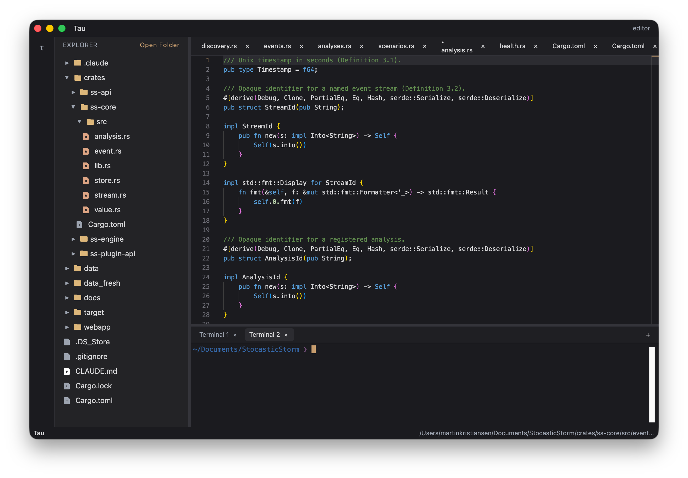
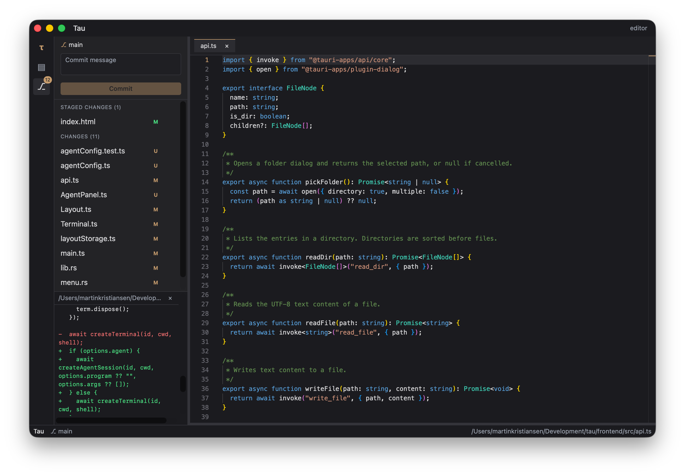
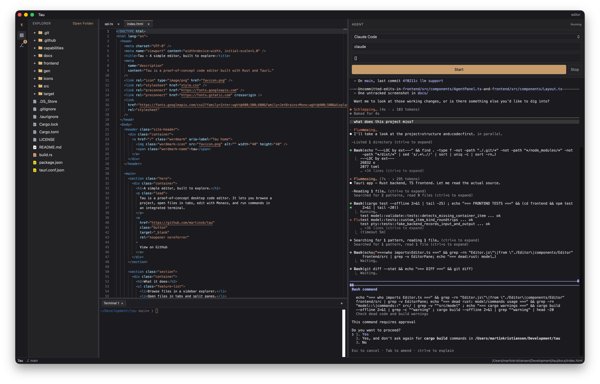

A simple editor, built to explore.
Tau is a proof-of-concept desktop code editor. It lets you browse a project, open files in tabs, edit with Monaco, and run commands in an integrated terminal.
View on GitHubWhat it does
- Browse files in a sidebar explorer.
- Open files in tabs and split panes.
- Edit code with syntax highlighting and LSP support.
- Run shell tasks in a built-in terminal panel.
- Stage, commit, and view diffs with built-in git support.
- Run a coding agent like Claude Code in a dedicated panel.
Current interface

Source control

Built-in coding agent
